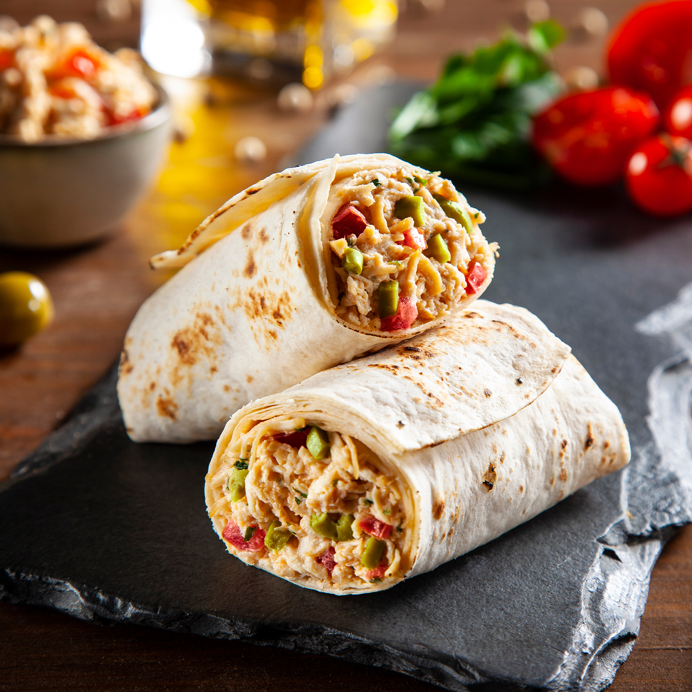

-
Burrito de frango
Modo de Preparo Burrito é um prato tradicional da culinária mexicana, feito com uma tortilla de farinha geralmente recheada de diversos ingredientes. Mas para tornar essa receita bem prática e fácil, sem alterar o resultado, utilizamos Rap10 no lugar da tortilla. Venha conferir o passo a passo!
1 Em uma travessa, coloque o frango desfiado, a Maionese Chipotle Hellmann’s e o cheiro verde. Misture bem e reserve.
2 Em cada pão tipo tortilha Rap10 Fit coloque o frango desfiado, a maionese, o cheiro verde, a acelga e os tomatinhos e enrole, no formato de um burrito.